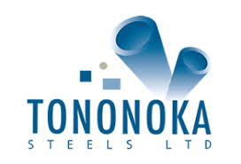

Apex Steel
The company is a leading manufacturer and supplier of steel products that include window sections, black pipes, rectangular pipes,
square tubes, circular hollows, and flat bars. Has premium pricing for its quality products.

Steel is known to be a highly durable metal. Steel-framed construction can withstand all kinds of external pressure such as earthquakes and thunderstorms. They do not age or decay as other construction materials. A well-constructed steel framed building can last up to 20 years. Steel is highly flexible and can be easily turned into any shape as desired.
The company is a leading manufacturer and supplier of steel products that include window sections, black pipes, rectangular pipes,
square tubes, circular hollows, and flat bars. Has premium pricing for its quality products.
Tononoka Hardware Limited is a major supplier of steel products in the Kenyan market. The Tononoka Group has earned an enviable and reputable position in terms of quality, cost-effectiveness and customer service over a period of time. The company supplies hollow sections, sheets & plates, TMT bars, and wire products among others. Offers premium pricing for its products.
Accounts for 15.1 percent of cement sold in Kenya. It's regular brand Blue Triangle costs Ksh 540 for a 50kg bag

Accounts for 15.0 percent of cement sold in Kenya. It's regular brand Savannah costs Ksh 660 for a 50kg bag

Accounts for 13.5 percent of cement sold in Kenya. It's regular brand Blue Triangle costs Ksh 670 for a 50kg bag
Accounts for 12.5 percent of cement sold in Kenya. It's regular brand Simba costs Ksh 700 for a 50kg bag